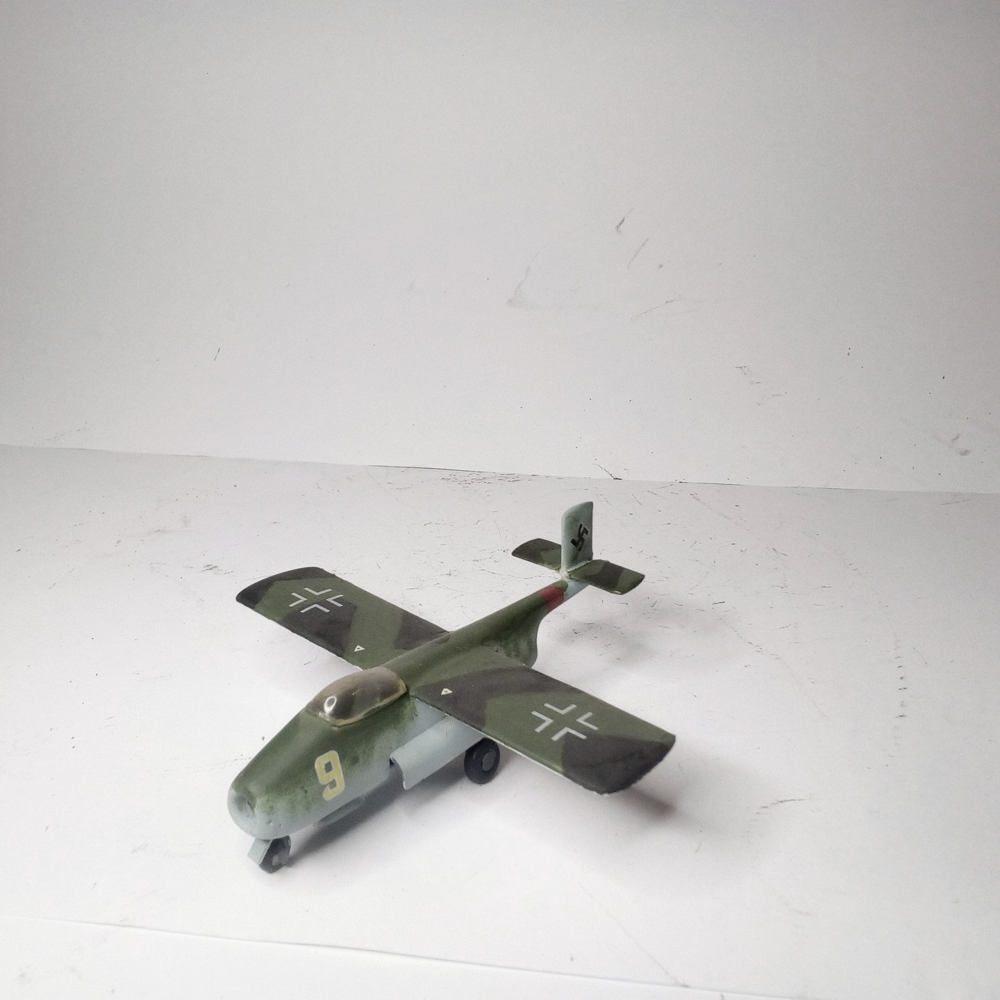
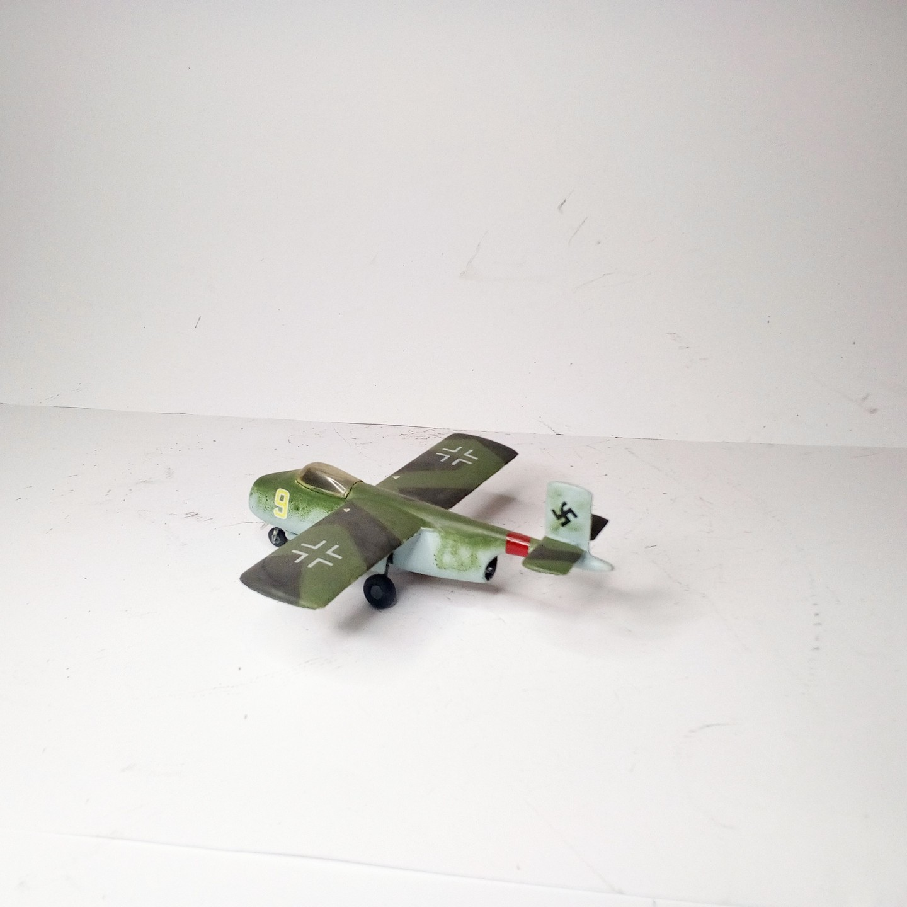

Aerei · scale model archive
Blohm&Voss P211.02
Blohm&Voss P211.02 — Kit: Airmodel, Scale: 1/72. B&W project submitted for the Volksjäger competition in September 1944, very interesting design could…

Photo gallery

English description
B&W project submitted for the Volksjäger competition in September 1944, very interesting design could bave been superior to the actual winner He 162
#1/72 #Airmodel
Descrizione italiana
B&W progetto submitted per il Volksjäger competition in settembre 1944, very interessante progetto could bave been superior unal actual vincitrice He 162.